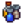
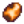
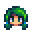
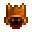
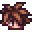
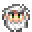
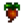
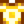

Fried Egg
| Fried Egg | ||||||||||
| Sunny-side up. | ||||||||||
| Information | ||||||||||
| Source | Cooking | |||||||||
| Energy / Health |
|
|||||||||
| Sell Price |
| |||||||||
 Qi Seasoning |
| |||||||||
| Recipe | ||||||||||
| Recipe Source(s) | Starter | |||||||||
| Ingredients | Egg (1) | |||||||||
Fried Egg is a cooked dish. It is prepared using either the kitchen inside an upgraded farmhouse or a Cookout Kit. It is the only recipe known to the player upon creating a new save file.
Fried Egg may randomly appear in Krobus' shop on Saturdays, in the Garbage Can outside the saloon, or in the Stardrop Saloon's rotating stock. It is also sold by Alex at the Desert Festival for 
Gifting
| Villager Reactions
| |
|---|---|
| Neutral | Abigail • Alex •  Caroline • Clint • Demetrius • Dwarf • Elliott • Emily • Evelyn • George • Gus • Haley • Harvey • Jas • Jodi • Kent • Krobus • Leo • Lewis • Linus • Marnie • Maru • Pam • Penny • Pierre • Robin • Sam • Sandy • Sebastian • Shane • Vincent • Willy • Wizard |
| Dislike | Leah |
Bundles
Fried Egg is used in the Chef's Bundle on the Bulletin Board.
Recipes
| Image | Name | Description | Ingredients | Energy / Health | Buff(s) | Buff Duration | Recipe Source(s) | Sell Price | |||
|---|---|---|---|---|---|---|---|---|---|---|---|
| Complete Breakfast | You'll feel ready to take on the world! | Fried Egg (1) Milk (1) Hashbrowns (1) Pancakes (1) | 200 90 |
 Farming (+2) Max Energy (+50) |
7m |
|
Tailoring
Fried Egg is used in the spool of the Sewing Machine to create the Fried Egg Shirt. 
Quests
Fried Egg is not used in any quests.
History
- 1.4: Can now be used in Tailoring.
- 1.5: Can now be prepared using a Cookout Kit. Recipe is now known upon starting a new game instead of after upgrading the farmhouse.
- 1.6: Can now be purchased from Alex at the Desert Festival.